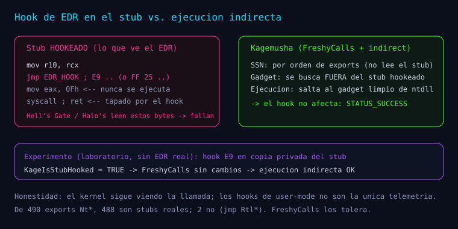

Serie: Kagemusha
"Kagemusha — Fase 6: robustez, hooks y límites reales"
Kagemusha — Fase 6: robustez, hooks y límites reales
Esta entrada documenta la Fase 6 (M6) tal como está registrada en el README.md, en docs/research/experimentos-fase6.md y en los documentos de baterías extendidas/pesadas/globales.
Del README: "Objetivo. Probar robustez ante hooks y entradas adversas (12 experimentos)."

Implementación (según el README)
KageIsStubHooked(src/resolver/gadget.c): detecta prólogo de hook (E9,FF 25).- Endurecimiento del parser PE (
exhash.c,freshycalls.c).
Los 12 experimentos (de docs/research/experimentos-fase6.md)
| # | Experimento | Cómo se probó | Resultado |
|---|---|---|---|
| 1 | Instalar hook E9 en el stub de NtClose | VirtualProtect + escribir E9 00 00 00 00 (copia privada COW) | hook instalado |
| 2 | Detectar el hook | KageIsStubHooked(stub) == TRUE | ✅ |
| 3 | Inmunidad de FreshyCalls | resolver SSN con el stub hookeado | ✅ mismo SSN (no lee el stub) |
| 4 | Gadget sigue válido | KageResolveGadgets con el stub hookeado | ✅ encuentra 0F 05 C3 |
| 5 | Ejecución indirecta con stub hookeado | NtClose_I(handle válido) | ✅ STATUS_SUCCESS (usa gadget, no el stub) |
| 6 | Restauración | restaurar bytes + KageIsStubHooked == FALSE | ✅ |
| 7 | Re-init con hook presente | KageInitialize() durante el hook | ✅ KAGE_OK |
| 8 | SSN de TODO el catálogo Nt* | FreshyCalls vs oráculo del stub | ✅ 488/488 stubs reales coinciden |
| 9 | Exports Nt* sin SSN | detección por prólogo != 4C 8B D1 B8 | ✅ 2 detectados (ver Hallazgo) |
| 10 | Fuzz del parser PE | 9 PE malformados (e_lfanew extremo) | ✅ NULL/error, sin crash |
| 11 | Concurrencia | 4 hilos × 1000 syscalls | ✅ 0 fallos |
| 12 | Init idempotente | 100 × KageInitialize() | ✅ tablas estables |
Hallazgo (limitación de FreshyCalls)
De docs/research/experimentos-fase6.md:
"De los 490 exports
Nt*de esta build, 488 son stubs de syscall reales y 2 no lo son."
| Export | Prólogo | Realidad |
|---|---|---|
NtGetTickCount | E9 AB 0A FE | jmp (implementado en ntdll, no es syscall) |
NtQuerySystemTime | E9 6B B7 F8 | jmp ntdll!RtlQuerySystemTime (no es syscall) |
"FreshyCalls cuenta estos exports al ordenar por VA. Pese a ello, en esta build el índice ordenado coincide con el SSN real para los 488 stubs de syscall (0 discrepancias), incluido todo nuestro catálogo. Queda documentado como límite a vigilar en otras builds."
Nota de seguridad (del doc y del README)
"
NtClose(handle inválido)genera una excepción first-chancec0000008que ntdll maneja; los scripts de cdb deben ignorarla consxi c0000008."
Endurecimiento posterior: A1/A2 y tests nuevos
El commit "fix: endurecimiento tras revision (A1 parser PE, A2 guardia init, M2 ledger, M3/M4) + tests T0/T24" añade (del README):
- A1 — parser PE: *"se validan las RVAs del export directory contra
SizeOfImage(evita
lecturas OOB con PE malformado) + fuzz con export directory malicioso (G8)."*
- A2 — wrappers: *"guardia de inicialización →
KAGE_STATUS_NOT_INITIALIZED(nuncajmpa
NULL) + test T0."*
- Tests nuevos: T0 (sin init) y T24 (ledger wrap-around, errores del resolver, parser
malicioso, KageSlotName fuera de rango).
Evidencia y resultados
Del README: "Suite T13-T17 → parte de los 166 PASS / 0 FAIL."
Y de las baterías relacionadas (documentadas en docs/research/):
- Batería extendida (T19): hook
FF 25detectado + FreshyCalls inmune; fuzz de 300 PE. - Batería pesada (T20): al hookear los 8 stubs,
VirtualProtectse cuelga (usa
NtProtectVirtualMemory) y se resuelve auto-hospedándose con nuestro NtProtectVirtualMemory_I.
- Batería global (T21): 484/484 stubs reales no hookeados (baseline); parser en
kernel32/kernelbase.
Reproducir (del README)
tools\build.cmd
bin\Kagemusha_tests.exe
powershell -File tools\verify.ps1Cómo sigue la serie
- Cómo leer la serie + Misión 0
- Guía de syscalls
- Visión general, tesis y metodología
- Fases 0 a 3: del toolchain al gadget
- Fase 4: ejecución indirecta real
- Fase 5: generalización y aridad
- Fase 6: robustez, hooks y límites reales (esta entrada)
- Fase 7 y baterías (T19–T22): ledger, CLI y CET
- Visibilidad y evasión (Defender, E2, E3, E4c)
Bibliografía y referencias
- Fuentes primarias:
README.md,docs/research/experimentos-fase6.md,
experimentos-extendidos.md, experimentos-pesados.md, experimentos-globales.md, src/resolver/gadget.c, src/util/exhash.c, src/resolver/freshycalls.c.
- am0nsec & smelly__vx — Hell's Gate (
github.com/am0nsec/HellsGate). - crummie5 — FreshyCalls (
github.com/crummie5/FreshyCalls).
Aprender a romper para poder defender.